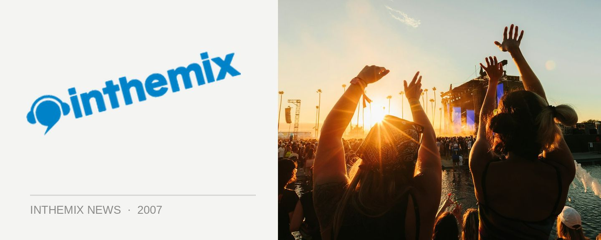

Godskitchen Melbourne lineup confirmed
One of the world’s biggest clubbing brands Godskitchen will be back again in Melbourne this year for a massive event in October, check below for the lineup. It represents somewhat of an evolution from previous years in that as well as the usual trance and harder sounds, there’s also a growing house flavour on the bill.
Godskitchen kicked off in the early 90s and quickly evolved into a ‘superclub’ brand, with a series of parties and residencies held in the UK. Today it continues as a weekly event in Birmingham and tours continuously around the world. For nearly a decade it has been traveling to Australia and naturally, it’ll be back in 2007.
Godskitchen hits Melbourne on Saturday October 6th, check below for the international lineup…
Rank 1
M.I.K.E (Push)
The Thrillseekers
Richard Durand
Kurd Maverick
Alex Gaudino
Bodyrox
Mashtronic (live)
Micky Slim
Gleave
Local Supports
Steve Strangis
Grant Smillie (TV Rock)
John Course
Derek K
Chardy
Little Rascals
TKO (Polyfonic)
Lewie Day
Papa Smurf
Bexta
Scott Alert
Dr Willis
NFX (live)
Master Kaos Vs LCK
Ben Evans
Mike Nichol
Steve May
Jules Plees
Scott Bateman